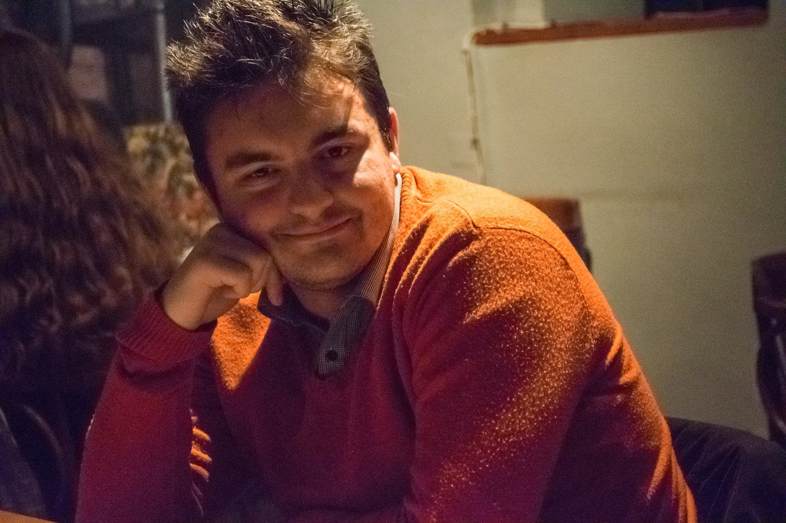

Laurentiu-Ioan Iancso

Summary
Professional Software Developer skilled in web developement frontend stack.
Education
- Graduate of "Stefan Odobleja" Theorical High School 2008-2012
- Batchlor's degree at University Politehnica of Bucharest 2013-2017
Work experience
- Internship at Ubisoft Romania
June 2018
- Build a game from scratch and added multiplayer capabilities
- Debugged and fixed issues
- Junior Online Programmer Ubisoft Romania
2019-2020
- Handle builing online tools that enabled designers to customize game services
- Online Programmer Ubisoft Romania
2020-2021
- Build and enhance game services
- Migrade existing services to new languages
- Gameplay Programmer Ubisoft Romania 2021-2022
2021-2022
- Develop game client features in order to enhance gameplay capabilities in co-op mode
- Software Developer Thales
2022-present
- Build and maintain services that enable distributed communication betweend systems
- Automate configuration of multiple types of systems in order to be deployed on various clients
Skills
Programming languages:
- C/C++
- Python3
- HTML5
- CSS3
- Typescript
- Go
List of certificates
- Bitacademy courses degrees
- Hackerrank certificates
Other